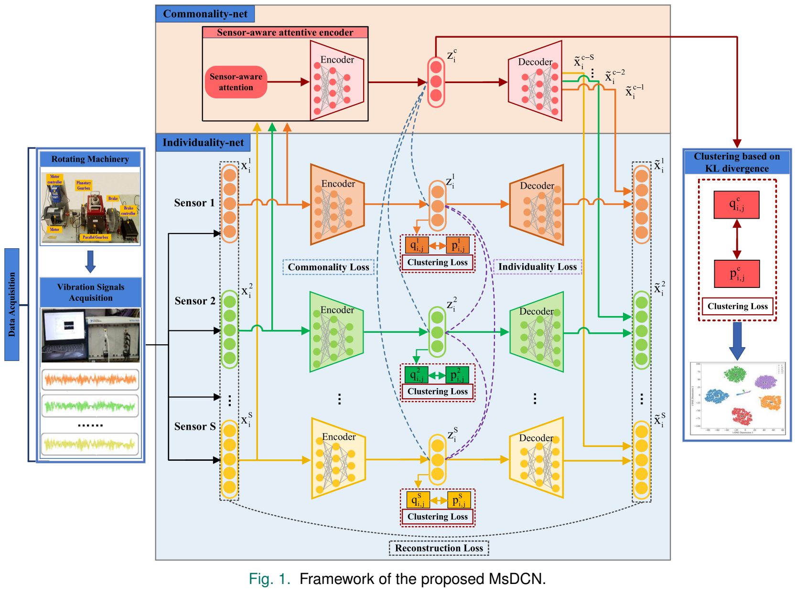
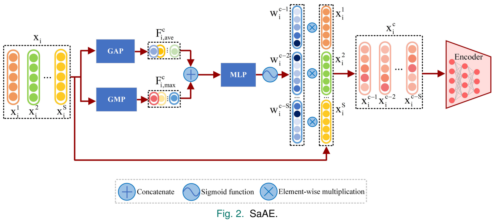

IEEE Sensors Journal, 2025
Multisensor Deep Clustering Networks With Joint Learning Strategy for Fault Diagnosis Considering Consensus-Specific Constraint
IEEE Sensors Journal, 25(11), 19921–19936, 2025.
Industrial fault diagnosis often relies on unlabeled readings from several sensors. Learning features separately from clustering leaves the representation poorly matched to the clustering task, while treating sensors as interchangeable inputs overlooks their shared and complementary signals.
Method
The multisensor deep clustering network (MsDCN) uses a sensor-aware attentive encoder (SaAE) in the Commonality-net to learn shared representations. Separate Individuality-nets retain sensor-specific representations. A consensus-specific constraint balances these representations during joint optimization of reconstruction and clustering. Autoencoder pretraining precedes joint optimization.

Enlarge figureSensor-aware attentive encoder
The attention module pools each sensor’s features and learns weights for the sensor inputs. The weighted signals feed the common encoder, allowing the shared representation to reflect different contributions from the sensors.

Enlarge figureResults
Across 20 runs on each of six gearbox and bearing datasets from SEU and DIRG, MsDCN achieves the highest mean clustering accuracy among the tested methods. On D5 and D6, it improves accuracy over the strongest comparison method by 11.35 and 5.74 percentage points.
| Dataset | MsDCN | Strongest comparison method | Difference |
|---|---|---|---|
| D1 | 99.52% | 99.26% | +0.26 pp |
| D2 | 99.24% | 99.13% | +0.11 pp |
| D3 | 98.94% | 98.76% | +0.18 pp |
| D4 | 99.32% | 99.08% | +0.24 pp |
| D5 | 51.50% | 40.15% | +11.35 pp |
| D6 | 52.32% | 46.58% | +5.74 pp |
pp = percentage points. The strongest comparison method is selected separately for each dataset. Source: Tables V–VII, p. 19930 (PDF p. 10).
Component ablations examine the contributions of the sensor-aware attentive encoder and the consensus-specific constraint.
Source: Table IX and Section V.B.6, p. 19934 (PDF p. 14).